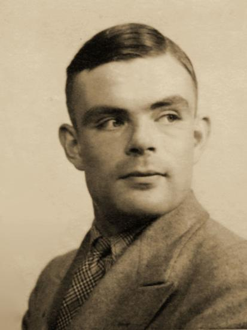

 Alan Turing nacque a Maida Vale, quartiere di Londra, il 23 giugno 1912, figlio di Julius e Ethel Turing, entrambi impiegati della famiglia reale in India. È stato un matematico, logico, crittografo e filosofo britannico, considerato uno dei padri dell'informatica e uno dei più grandi matematici del XX secolo. Il suo lavoro ebbe una vasta influenza sulla nascita della disciplina dell'informatica, grazie alla formalizzazione dei concetti di algoritmo e calcolo mediante l'omonima macchina, che a sua volta costituì un significativo passo avanti nell'evoluzione verso il moderno computer. Per questo contributo è considerato il padre della scienza informatica e dell'intelligenza artificiale, da lui teorizzate già negli anni trenta del '900. A causa della sua enorme passione per le materie scientifiche, venne malvisto dai professori del St. Michael, la sua prima scuola, che da sempre ponevano più enfasi sugli studi classici. Nel 1931 fu ammesso al King's College dell'Università di Cambridge, dove fu allievo di Ludwig Wittgenstein e dove approfondì i suoi studi sulla meccanica quantistica, la logica e la teoria della probabilità. Nel 1934 si laureò con il massimo dei voti e nel 1936 vinse il premio Smith prima di trasferirsi alla Princeton University dove studiò per due anni, ottenendo un Ph.D. In quegli anni pubblicò l'articolo "On computable Numbers, with an application to the Entscheidungsproblem" nel quale descrive per la prima volta la futura "macchina di Turing". Nel 1940, a 28 anni, era a capo del gruppo di ricercatori impegnati nella decrittazione delle macchine usate dalla marina tedesca, fra le quali Enigma. Il 31 marzo 1952 Alan Turing fu arrestato per omosessualità e portato in tribunale,Turing avrebbe denunciato per furto un amico ospite in casa sua e avrebbe ammesso il proprio orientamento sessuale in risposta alle domande pressanti della polizia. In quel periodo, nel parlamento britannico si discuteva l'abrogazione del reato di omosessualità ed è possibile che il clima mutato abbia indotto Turing a un comportamento incauto. Condannato per omosessualità, fu costretto a scegliere tra una pena a due anni di carcere o la castrazione chimica mediante assunzione di estrogeni. Per non finire in prigione, lo scienziato optò per la seconda alternativa. Per oltre un anno si sottopose a trattamenti che provocarono in lui un calo della libido e lo sviluppo del seno (ginecomastia). La depressione legata al trattamento e all'umiliazione subita fu il motivo che lo condusse, il 7 giugno 1954, al suicidio.